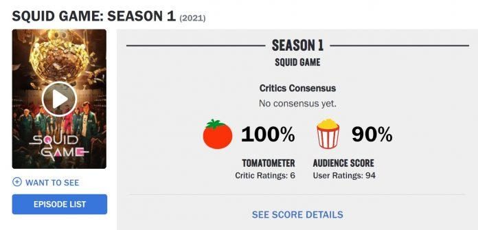

Squid Game không cung cấp một lối thoát khỏi sự khủng khiếp của thế giới thực; trong giới hạn là một bộ phim truyền hình hư cấu, nó mang lại cho chúng ta một lời khẳng định rằng những sự tàn bạo, khủng khiếp, đáng ghê tởm của thế giới thực sự tồn tại và chúng ta không đơn độc trong việc phát hiện ra chúng là cơn ác mộng.
Trên trang đánh giá phim uy tín Rotten Tomatoes, Squid Game – Trò chơi con mực đã nhận được 100% cà chua tươi từ các chuyên gia và 90% điểm từ các khán giả. Đây là một điểm số cực kỳ cao đối mà bất cứ bộ phim nào cũng mong đợi.
